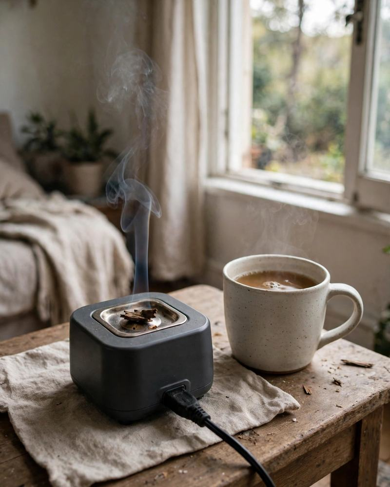

55 · 进阶 | 阅读 5 分钟
沉香能助睡眠、安神吗？
依据：《中国药典》、LY/T 2904-2017《沉香》
作者：Jack Qian（种植园团队，2002 年起种沉香）
一 句 话 结 论
传统香文化认为沉香香气能让人静心放松，睡前闻香是很多人的习惯；但现代医学没有证实沉香能治疗失眠，香气助眠更多是放松带来的主观感受。长期失眠应该就医，不要把沉香当安眠药。

沉香原材。场景示意。
睡前点一支沉香线香，是很多人的习惯。沉香到底能不能助睡眠、安神？这个问题要分开说：放松，和治疗失眠，是两回事。
传统说法：静心安神
传统香文化里，沉香常用于静坐、冥想、睡前放松；古籍也有沉香安神的记载。这是经验说法，流传了很久。
闻香放松的原理不难理解：固定的睡前仪式、安静的环境、舒缓的香气，都有助于放松。这些因素加在一起，很多人觉得睡得更好。
现代医学：没有证实能治疗失眠
目前没有高质量临床证据证明沉香能治疗失眠。香气带来的放松感是主观体验，因人而异，有人觉得有效，有人觉得没用。
放松不等于治疗。偶尔睡不好，闻香放松可以试试；长期失眠，是医学问题，要找医生。
睡前闻香，怎么用才安全
用线香或电熏炉低温闻香，房间通风，别在密闭空间长时间点。线香要熄灭再睡，别点着睡，有安全隐患。
孕妇、小孩、呼吸道敏感的人谨慎。线香要选配料简单的，掺香精、助燃剂的线香别在睡前点。
长期失眠怎么办
就医，找原因。失眠的原因很多：压力、作息、身体疾病，原因不同，处理方法也不同。
沉香可以作为睡前放松的辅助，不能代替治疗。把沉香当安眠药，耽误的是看病的时间。
自查清单
收 藏 卡 · 截 图 保 存
记住这几点
- · 放松不等于治疗失眠
- · 睡前闻香：通风、熄灭再睡
- · 长期失眠要就医，别当安眠药
来源：《中国药典》、LY/T 2904-2017《沉香》。
边界说明：本文讲的是初筛方法，不是最终鉴定结论。最终结论以具备 CMA 资质的机构检测报告为准。